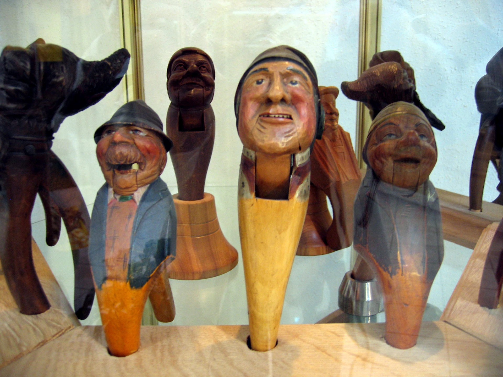
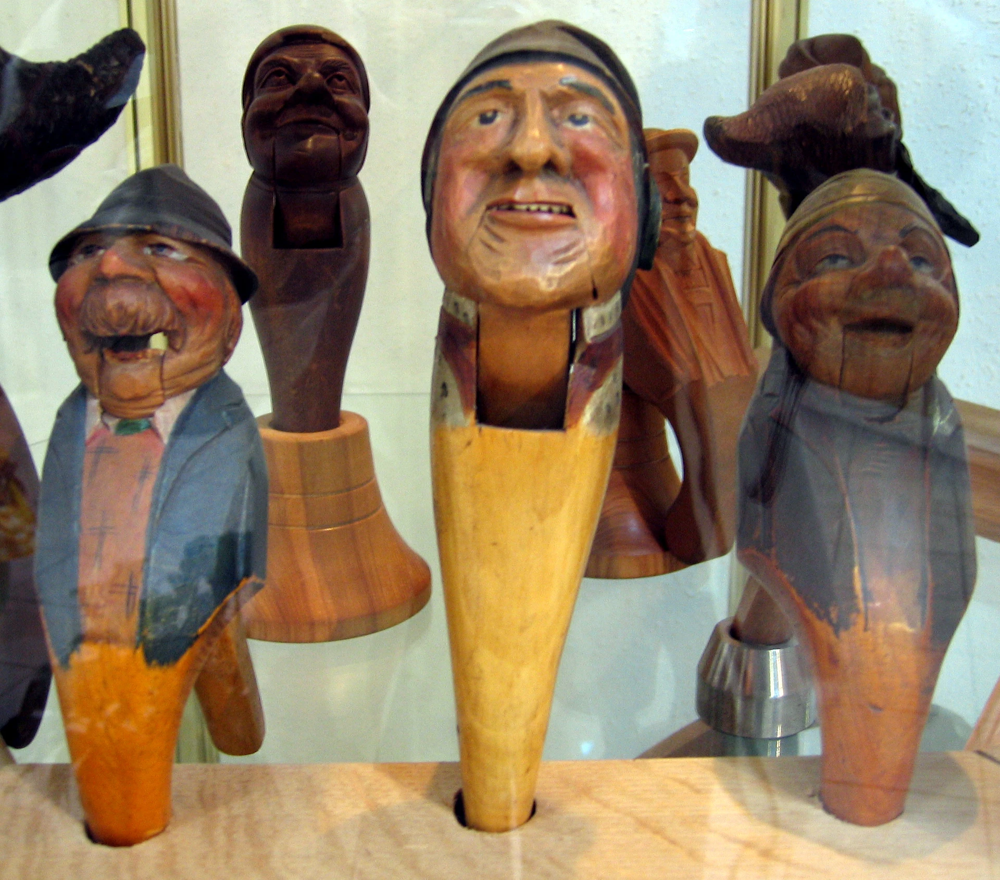
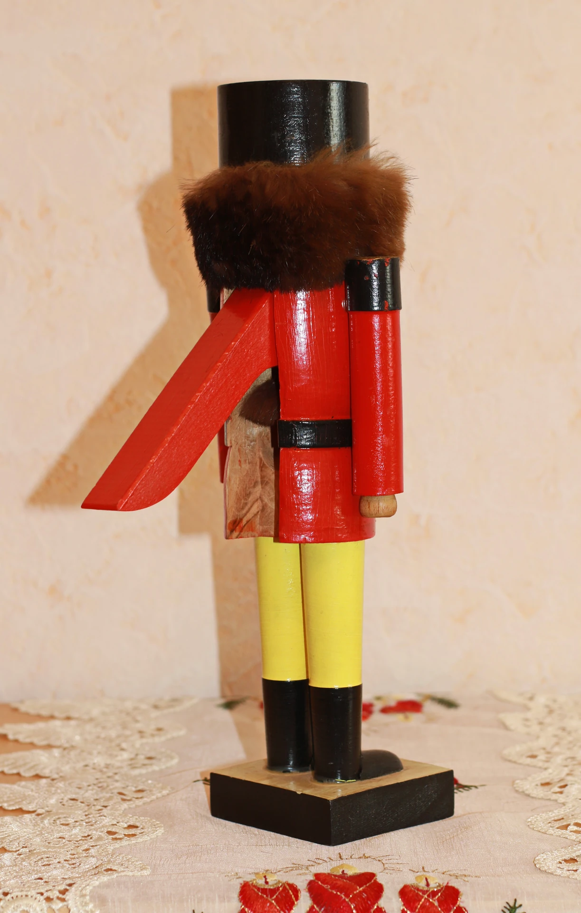
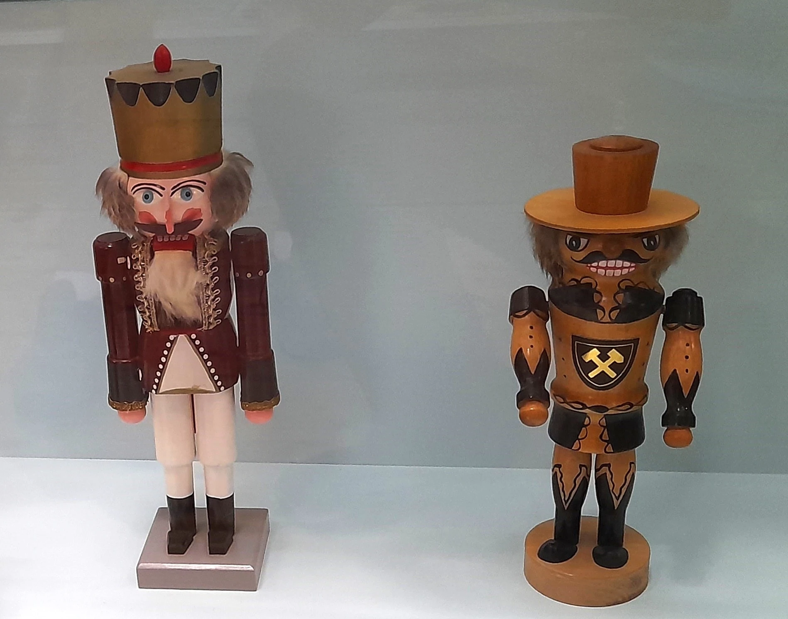

아직 펼치지 않은 카드아기 예수의 장터 · 4에르츠산맥 호두까기 인형광산이 기울던 독일의 산골 마을에서, 한 목수가 부업으로 깎기 시작한 인형이 세계적인 성탄 상징이 되었어요. 어떤 인형일까요?입으로 호두를 깨는 나무 병정 인형이 있대!
1870년 무렵 ~ 오늘독일 작센주 · 에르츠산맥 자이펜
에르츠산맥 호두까기 인형
독일 에르츠산맥의 마을 자이펜에서는 1870년 무렵부터, 나무를 선반에 물려 빙빙 돌리며 깎아 호두까기 병정을 만들어요. 네모난 나무 토막 하나가 130번쯤 손을 거쳐, 등 뒤의 지렛대로 호두를 깨는 병정이 돼요. 단추를 눌러 그 차례를 한 단계씩 따라가 보세요.
네모난 나무 토막이 빙글빙글 돌면서 호두 깨는 병정이 된대. 단추를 눌러 같이 만들어 볼까?
검수 전 시안이에요(기준서 2판). 장면에는 기록에 있는 것만 옮겼고, 박물관이 들려주는 옛이야기와 전해지는 이야기는 그렇다고 밝혔어요. 만드는 차례 그림은 이 안내서가 그렸어요. 상상은 ‘눈 감고 상상해 보기’에만 썼어요.
시안 확인용카드 단계 미리 보기
1
병정보다 먼저
성탄철의 오랜 상징 장식에는 호두도 있어요. 호두는 움트는 생명의 표시였어요. 단단한 껍데기를 깨고 달콤한 속을 꺼내는 일은 하나의 의식처럼 여겨지기도 했어요.
호두를 깨무는 사람 모양 인형은 18세기에 이미 인기였어요. 이런 인형에는 조용한 비꼼과 웃음이 담겼어요. 19세기에는 나폴레옹이나 비스마르크 같은 이름난 사람의 얼굴을 본뜬 호두까기도 단단한 호두를 깨물었어요.

사진은 노이하우젠 호두까기 박물관의 진열장이에요. 돌려 깎은 병정이 아니라, 칼로 얼굴을 깎은 호두까기들이에요. 이 호두까기들이 언제 어디서 만들어졌는지는 사진 설명에 나와 있지 않아요.
옛날 호두까기는 얼굴을 칼로 깎았대. 입을 쩍 벌린 할아버지 같지?
물어보기이 얼굴들 입에 호두를 넣으면 어떻게 될까?
2
그림책에서 나온 왕
1870년 무렵, 자이펜의 목수 빌헬름 퓌히트너는 공사가 쉬는 겨울에도 돈을 벌어야 했어요. 그의 할아버지는 이미 드레스덴의 성탄 장 슈트리첼마르크트에서 간단한 장난감과 부엌 살림을 팔았어요.
민덴 박물관은 빌헬름의 공방에서 나온 첫 호두까기들이 1851년 그림책의 왕을 본떴다고 설명해요. 『더벅머리 페터』를 쓴 하인리히 호프만의 성탄 그림책 『호두까기 왕과 가난한 라인홀트』예요. 그림책의 왕은 이렇게 노래해요.

“내 이름은 호두까기 왕, 단단한 호두를 깨물어 부수지. 달콤한 알맹이는 부지런히 삼키고, 껍데기는, 에이, 남들한테 던져 주지. 나는 왕이니까.”
하인리히 호프만 『호두까기 왕과 가난한 라인홀트』(1851) · 민덴 박물관이 실은 구절을 이 안내서가 옮김
사진은 옆에서 본 호두까기예요. 등 뒤로 비스듬히 튀어나온 빨간 판이 지렛대예요. 이 지렛대를 누르면 입이 꽉 다물어지며 호두가 깨져요.
빌헬름은 집을 짓던 목수답게, 따로 깎은 나무 조각들을 이어 맞춰 몸을 세웠다고 해요. 그 전의 병정 모양 호두까기는 나무 한 덩이를 통째로 깎았대요.
그림책 속 호두까기 왕이 나무 인형이 됐대. 등에 있는 막대를 누르면 입으로 호두를 딱!
물어보기왕은 달콤한 알맹이만 먹고 껍데기는 남한테 던진대. 어떻게 생각해?
3
나무 토막에서 병정까지
노이하우젠 호두까기 박물관은 자이펜 호두까기를 만드는 차례를 적어 두었어요. 보통 크기는 35cm쯤이고, 130번쯤 손이 가요. 돌려 깎는 조각에는 주로 가문비나무와 너도밤나무를 써요.
선반은 나무를 빙빙 돌리는 기계예요. 돌아가는 나무에 끌을 대면 둥글게 깎여요. 오늘 자이펜의 마르쿠스 퓌히트너는 망치로 몇 번 세게 쳐서 나무를 선반에 물려요. 끌을 다섯 번 대면 나무 토막이 작은 사람 모양이 돼요. 허리에 남긴 둥근 띠는 나중에 검은 허리띠가 돼요.
단추를 누를 때마다 한 단계씩 만들어져요. 인형은 옆에서 본 모습이에요. 왼쪽이 얼굴, 오른쪽이 등이에요.
이 안내서가 그린 그림 · 노이하우젠 호두까기 박물관이 적은 만드는 차례를 바탕으로 · 선반은 세워서 그렸고, 130번쯤의 손길을 아홉 단계로 줄였어요
쓴 재료
- 가문비나무·너도밤나무
- 밑칠
- 빨강
- 파랑
- 초록
- 노랑
- 검정
- 털
다 만들었어요. 네모난 나무 토막이 130번쯤 손을 거쳐, 등을 누르면 호두를 깨는 병정이 됐어요.
나무 토막이 빙글빙글 돌면서 사람 모양이 돼!
물어보기네모난 나무가 어떻게 둥글어졌을까?
4
여덟 대째 도는 선반
에르츠산맥에는 독일과 체코의 국경이 지나가요. 이 산 사람들은 오랫동안 광산으로 살았어요. 체코 쪽 산마을 보지다르(독일 이름 고테스가프)의 박물관에도, 왕관을 쓴 호두까기 옆에 가슴에 광산 표시(엇갈린 망치)를 단 광부 인형이 서 있어요.
자이펜 끝자락, 들판에 둘러싸인 작은 집에서는 지금도 선반이 돌아요. 빌헬름이 첫 호두까기를 만들었다고 전해지는 집이에요. 그 집에서 마르쿠스 퓌히트너가 말해요.

“우리 집안은 여덟 대째, 몸통과 머리를 나무 한 토막에서 돌려 깎아요. 저도 그렇게 해요.”
마르쿠스 퓌히트너 · 「비르트샤프트 인 작센」 기사(2026년 1월 5일)에서 · 이 안내서가 옮김
왕 옆에 광부 인형도 있어. 가슴에 망치 그림이 있지?
물어보기너라면 누구 모습으로 호두까기를 만들고 싶어?
눈 감고 상상해 보기
눈을 감아 보세요. 들판 끝 작은 집 안에서 선반이 웅웅 돌아요. 끌이 닿을 때마다 나무 부스러기가 돌돌 말려 떨어지고, 나무 냄새가 퍼져요. 네모난 토막이 어느새 둥근 몸이 되고, 허리에 띠 하나가 생겨요.
눈을 감아 봐. 나무가 빙글빙글 돌아. 사각사각, 나무 부스러기가 돌돌 말려 떨어져!
나의 자리
퓌히트너 집안은 여덟 대째 몸통과 머리를 나무 한 토막에서 돌려 깎아요. 우리 집에서 여덟 대 뒤까지 이어졌으면 하는 손길 하나는 무엇인가요?
너도 누군가에게 배운 솜씨가 있어? 그걸 누구에게 알려 주고 싶어?
마음에 닿는 한 줄을 고르거나 직접 써 보세요. 한 줄을 남기면 이 자리의 도장이 찍혀요. 이 기기에만 저장돼요.
더 깊이
궁금한 칸만 펼쳐 읽어도 괜찮아요.
알고 보면
박물관의 옛이야기 노이하우젠 호두까기 박물관은 이런 옛이야기를 들려줘요. 호두를 깨기 귀찮아하던 부자 농부가, 호두를 쉽게 깨는 방법을 찾는 사람에게 상을 걸었어요. 늙은 인형 깎는 이가 사흘 동안 큰 입과 단단한 턱을 가진 작은 사람을 깎아 왔지요. 박물관은 이야기를 이렇게 맺어요. 나무 호두까기가 농부 마음의 단단한 껍데기까지 깨뜨려, 농부는 모든 아이의 좋은 친구가 되었다고요.
본이 된 인물들 빌헬름 퓌히트너는 칼과 선반 날로 오늘 자이펜 호두까기의 본이 된 인물들을 만들었어요. 왕과 병정, 광부와 산림관, 소방관, 갑옷 입은 기병, 밤 순찰꾼이에요(베를리너 차이퉁).
칠과 꾸밈 칠에는 아교 물감과 포스터물감을 쓰고, 알코올 니스나 니트로 니스를 입혀요. 꾸미는 데는 털·양털·솔털·철사·양철·종이·가죽·천·끈을 쓰고, 요즘은 플라스틱도 써요(노이하우젠 박물관).
모은 사람 노이하우젠 박물관의 호두까기는 1966년, 기계 만드는 장인 위르겐 뢰슈너가 모으기 시작했어요. 지금은 아들 우베 뢰슈너가 이어 가요. 서른 곳쯤의 나라와 지역에서 온 호두까기가 있어요.
기록마다 다른 점
몇 대째일까 2026년 기사에서 마르쿠스 퓌히트너는 집안이 ‘여덟 대째’ 몸통과 머리를 한 토막에서 돌려 깎는다고 말해요. 같은 기사는 그를 선반 일을 해 온 집안의 여덟째 대로 소개해요. 한편 마르쿠스를 ‘다섯째 대 호두까기 장인’이라고 쓴 기사도 있어요(아틀라스 옵스큐라). 어디서부터 세느냐에 따라 수가 달라지는 것으로 보여요.
첫 호두까기 자이펜 관광 안내는 빌헬름을 ‘처음 만든 사람들 가운데 하나’로 소개해요. 2026년 기사도 그가 첫 에르츠산맥 호두까기를 만들었다고 ‘전해진다’고 써요. 때도 ‘1870년 무렵’, ‘1870년대 초’로 기록마다 조금씩 달라요.
그림책과 첫 인형 첫 인형들이 호프만 그림책의 왕을 본떴다는 이야기는 민덴 박물관의 설명에 따른 거예요. 이 안내서는 빌헬름 쪽의 기록에서 이를 확인하지 못했어요.
더 보기
아홉 단계 끝까지 금박
나무 토막을 둥글게 깎는 데서 수염을 붙이기까지, 아홉 단계를 끝까지 해 보면 카드에 금박이 입혀져요.
아홉 단계를 끝까지 해 보기
아이와 함께 채색
아이와 함께 ‘영화처럼 보기’를 끝까지 보면 카드가 채색돼요.
아이와 함께 ‘영화처럼 보기’를 끝까지 보기
근거 보기 (11)
- 노이하우젠 호두까기 박물관(공식 누리집): 만드는 차례 — 보통 35cm, 130번쯤, 가문비나무·너도밤나무, 꾸밈 재료(털·양털·솔털·철사·양철·종이·가죽·천·끈, 요즘 플라스틱), 각목 모서리 깎기 → 원기둥(쉬룹뢰레·끌), 머리·목·윗옷 끝 홈, 팔·다리·받침, 코·발(미리 톱으로 자른 토막), 입 파기, 지렛대(띠톱·핀), 붙이기, 본대로 깎기, 밑칠·사포, 빨강·파랑·초록·노랑·검정, 물감·니스, 수염·머리털 / 부자 농부와 인형 깎는 이의 옛이야기 / 1966년 위르겐 뢰슈너, 우베 뢰슈너, 서른 곳쯤의 나라와 지역
- HBZ 잡지: 「노이하우젠의 호두까기 박물관」 — 같은 만드는 차례(박물관 누리집 글과 대조)
- 자이펜 관광 안내: 목공예 A~Z — 성탄 장식의 호두(움트는 생명의 표시), 달콤한 속을 꺼내는 의식, 18세기 사람 모양 호두까기(조용한 비꼼·풍자), 빌헬름 프리드리히 퓌히트너가 1870년 무렵 부업으로 돌려 깎은 사람 모양 호두까기
- 민덴 박물관(museum-digital): 호두까기 설명 — 하인리히 호프만 『호두까기 왕과 가난한 라인홀트』(1851)의 왕의 노래, 1870년 무렵 퓌히트너 공방에서 이 왕을 본떠 첫 돌려 깎고 칠한 호두까기, 등의 지렛대, 19세기 나폴레옹·비스마르크 얼굴 호두까기, 성탄철의 호두
- Wirtschaft in Sachsen(Valentin Dreher, 2026년 1월 5일): 마르쿠스 퓌히트너 — 자이펜 끝 들판의 작은 집, 1870년 무렵 첫 에르츠산맥 호두까기(전해짐), 망치로 선반에 물림, 끌 다섯 번, 허리 고리 → 검은 허리띠, “여덟 대째 몸통과 머리를 한 토막에서”, 120번 넘게 더
- 베를리너 차이퉁(Ina Pachmann, 2021년 12월 9일): 빌헬름 퓌히트너 — 1870년 무렵 가문비나무로 첫 호두까기, 목수, 공사가 쉬는 겨울의 벌이, 할아버지가 드레스덴 슈트리첼마르크트에서 장난감·부엌 살림을 팖, 칼과 선반 날, 본이 된 인물들
- 아틀라스 옵스큐라: 퓌히트너 집안 — 1870년대 초 첫 호두까기, 집 짓는 목수, 여러 조각을 나무 이음으로(그 전 병정 호두까기는 통째로 깎음), 마르쿠스는 ‘다섯째 대 호두까기 장인’
- 더 크리스마스 하우스(퓌히트너 인형을 파는 가게의 글): 고트헬프 프리드리히 퓌히트너가 드레스덴 슈트리첼마르크트에서 나무 인형을 팖 — 베를리너 차이퉁과 대조
- 보지다르 시 공식 누리집: 독일 국경, 크루슈네호리(에르츠산맥)의 가장 높은 봉우리 클리노베츠 아래, 유네스코 세계유산 에르츠산맥 광산 지역
- museum-digital 지명: 보지다르(독일 이름 고테스가프), 체코 카를로비바리
- 위키미디어 공용: 노이하우젠 박물관 사진(René Röder, 2006), 옆에서 본 호두까기(Kora27, 2018), 보지다르 박물관 진열장(Aagnverglaser, 2023) 파일 정보
그림·사진·소리 출처
‘처음 만나는 기독교 문화’의 깊은 카드예요. 카드 단계와 남긴 글은 이 기기에만 저장돼요.